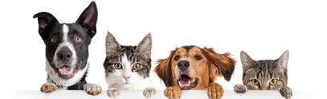
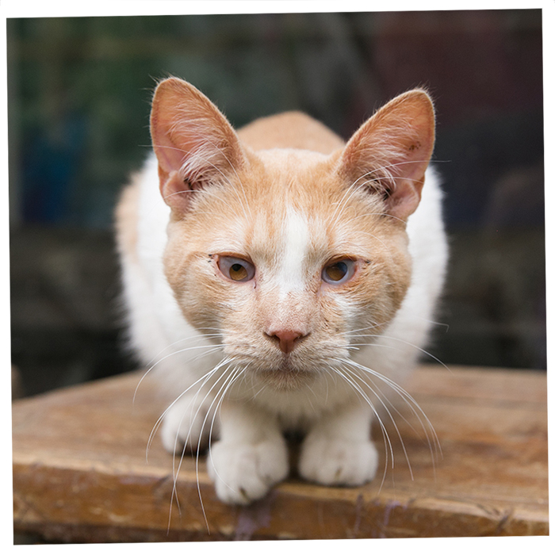

gatos
perros

ong-ayuda a un peludo
Una ONG “Ayuda a un peludo” que trabaja con la adopción de animales que viven en la calle,
necesita con urgencia que ustedes creen un sitio web que permita mostrar las fichas de cada uno de los animalitos que están disponibles para su adopción.
Encargados:
Luis Huircan - Cargo: Veterinario.
Maximiiano Urrejola - Cargo: Rescatista.
Nuestra seccion de ayuda:
